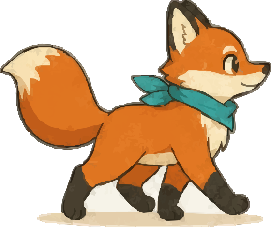

聖地巡礼AI GUIDE
どの聖地へ行きますか？
ようこそ、聖地巡礼へ！行きたいアニメの聖地を教えてください。作品名・駅名・シーンの写真、なんでもOKです 🦊
こんな風に聞けます
AIの案内は誤りを含むことがあります · 現地の最新情報をご確認ください

聖地巡礼AI GUIDE
AIの案内は誤りを含むことがあります · 現地の最新情報をご確認ください
メールにログインリンクをお送りします。パスワード不要。端末をまたいで現地で開けます。
ゲストのルートはこの端末に一時保存。ログインすると永久保存＆共有できます。